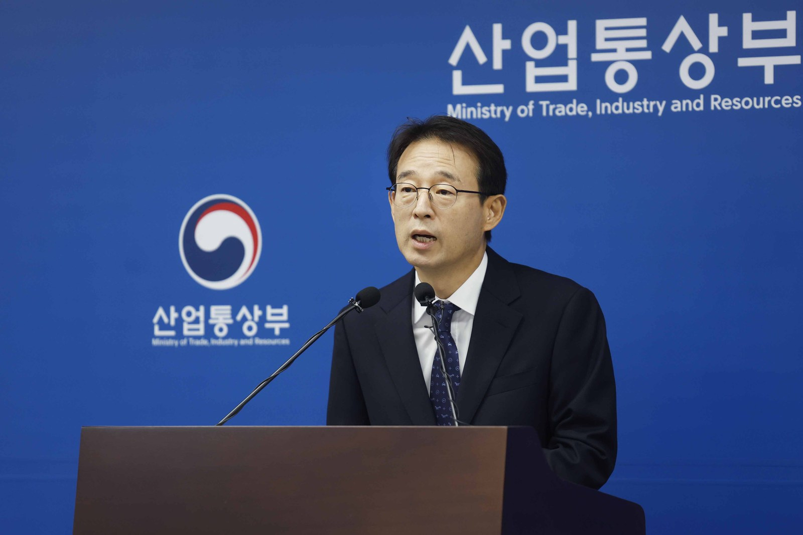
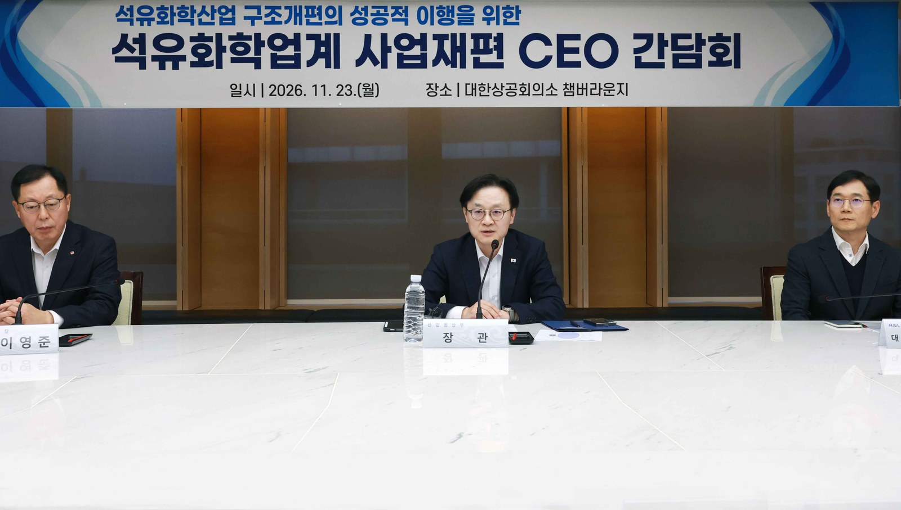

[한국경제민낯④] 대중 흑자 433억불, 반도체 칩 빼면 405억불 적자
반도체 칩 흑자 837억달러, 대중 수출의 59.2%
승용차·축전지 대중 적자 각 40억달러대
중국 투자 8.1% 감소, 여수 139만톤 감축 계획
AI경제저널=김갑봉 기자 | 11월 26일 산업통상부 무역위원회는 중국산 폴리염화비닐 서스펜션 수지에 잠정덤핑방지관세 23.47~26.02%를 매기자고 재정경제부 장관에게 건의하기로 의결했다. 파이프와 창호, 전선 피복에 쓰는 원료다. 통조림과 음료 캔에 쓰는 중국산 석도강판에는 8.05~8.36%를 건의하기로 했다. 최종판정은 내년 4월 예정이다.
산업통상부 월별 집계로 중국은 1~10월 한국의 최대 수출시장이었다. 관세청 확정 집계로 1~10월 대중 수출은 1985억달러(약 287조7000억원), 수입은 1552억달러(약 225조원)다. 흑자는 433억달러(약 62조7000억원)다. 산업통상부 월별 집계로 지난해 같은 기간은 약 105억달러(약 14조9000억원) 적자였다.
대중 흑자 433억달러, 수출의 59.2% 전자집적회로
관세청 수출입무역통계로 올해 1~10월 대중 전자집적회로(반도체 칩) 수출은 1175억달러(약 170조3000억원)다. 대중 수출의 59.2%다. 전자집적회로에서만 837억달러(약 121조4000억원) 흑자가 났다. 전체 흑자에서 이 흑자를 빼면 나머지 품목은 약 405억달러(약 58조7000억원) 적자다(연구소 추산).
관세청 확정치로 10월 대중 수출은 1년 전보다 133.8% 늘었다. 산업통상부는 잠정 집계 때 메모리 값이 올라 늘어난 반도체와 농수산식품·화장품 수출을 이유로 들었다. 산업통상부 집계로 10월 1~25일 대중 반도체 수출은 331% 늘었다. 관세청 잠정치로 11월 1~20일 대중 수출도 1년 전보다 145.6% 늘었다.
2025년 대중 수출은 1308억달러(약 186조원)로 1.7% 줄었다. 산업통상부는 중국의 중간재 자급률 향상과 공급망 내재화, 한국 기업의 생산기지 다각화를 원인으로 들었다. 무선통신기기 수출 감소의 원인으로는 중국의 자체 역량 강화를 꼽았다.
두 나라 정부는 11월 18일 자유무역협정 서비스·투자 후속협상 실질타결을 선언했다. 2024년 한국 상품교역에서 중국 비중은 20.7%, 서비스교역은 12.4%다. 중국은 영화·게임에 최혜국대우를 약속했다. 협정에는 중국에서 매장 30개 이상을 운영하려는 한국 기업이 중국 기업과 합작하지 않고 독자 운영할 수 있게 한 조항도 들어갔다.

전자집적회로 밖 적자, 승용차와 축전지
관세청 집계로 올해 1~10월 중국산 승용차 수입은 42억달러(약 6조1000억원), 대중 승용차 수출은 1억6000만달러(약 2300억원)다. 승용차 적자는 41억달러(약 5조9000억원)다. 축전지는 수입 44억달러(약 6조4000억원), 수출 3억8000만달러(약 5600억원)로 40억달러(약 5조9000억원) 적자다.
중국 국가통계국 집계로 10월 리튬이온전지 생산은 1년 전보다 30.0%, 산업용 로봇은 26.0% 늘었다. 같은 달 첨단기술 제조업 부가가치는 17.6% 늘었다. 그런데 3분기 일정 규모 이상 공업기업의 설비가동률은 73.1%로 1년 전보다 1.5%포인트 낮았다. 화학원료·화학제품 제조업은 69.7%로 2.8%포인트 떨어졌다.
중국 내수 부진, 고정자산투자 8.1% 감소
국가통계국은 3분기 국내총생산이 1년 전보다 4.5%, 1~3분기는 4.6% 늘었다고 밝혔다. 그런데 1~10월 고정자산투자는 8.1% 줄었다. 부동산 개발투자는 21.6%, 민간투자는 11.4% 줄었다. 10월 소비품 소매판매는 0.4% 늘었다.
같은 10월 중국 수출은 위안화 기준 28.7% 늘었다. 국가통계국은 이 발표에서 국내의 공급은 강하고 수요는 약한 문제가 여전히 두드러진다고 적었다. 별도 발표를 보면 10월 생산자물가는 1년 전보다 5.7% 올랐다. 생산재는 7.4% 올랐고 이 가운데 채굴업은 27.9% 올랐다. 생활재는 0.1% 내렸다.
대외경제정책연구원 문지영 등은 2025년 12월 보고서에서 중국의 공급 능력 확대 투자를 짚었다. 단기에는 수요를 만들지만 중장기에는 과잉 공급을 키울 수 있다는 분석이다. 34개국 모형 추정에서 한국 국내총생산은 중국 수요 충격에 마이너스 0.22%의 지속 반응을 보였다. 연구진은 한국이 분석 대상국 가운데 영향이 큰 편이라고 봤다.
석유화학 설비 감축과 덤핑방지관세
산업통상부 집계로 2025년 1월 1일~12월 25일 대중 석유화학 수출은 162억7000만달러(약 23조1000억원)로 6.6% 줄었다. 산업통상부는 중국 내 공급 과잉과 수요 회복 지연을 원인으로 들었다. 같은 기간 일반기계는 6.2%, 무선통신기기는 6.5% 줄었다. 올해 10월 1~25일에는 석유화학이 7.4%, 일반기계가 25.7% 늘었다.
석유화학 업계는 2025년 8월 20일 나프타분해시설 270만~370만톤을 줄이겠다는 자율협약을 맺었다. 정부는 2026년 2월 대산 1호 사업재편을 발표했고 7월 20일 여수 1호 사업재편계획을 승인했다. 여수에서는 여천엔씨씨 2·3호기 139만톤이 사업재편 기간(3년) 동안 가동을 멈춘다. 정부는 금융·세제 등으로 7000억원 이상을 지원한다.
7월 문신학 산업통상부 차관은 대산·여수에 이어 울산 사업재편 논의도 신속히 추진하겠다고 밝혔다. 11월 23일 김정관 산업통상부 장관은 석유화학 기업 대표들과 사업재편 성과와 향후 방향을 논의했다. 산업통상부는 2025년 12월 한 달 철강 수출이 10.7% 준 원인으로 미국·유럽연합 수요 둔화와 중국발 글로벌 공급 과잉을 들었다.
무역위원회는 11월 26일 중국·미국·말레이시아산 아크릴산 2-에틸헥실 덤핑조사 개시도 보고받았다. 엘지화학이 신청한 건으로 내년 8월 최종판정 예정이다. 같은 날 중국·대만산 고체 수산화나트륨의 국내산업 피해 공청회도 열렸다.

여수 일자리와 대응 과제
관계기관 합동 자료는 여수 1호 사업재편 기업들이 설비를 줄인 뒤에도 유휴 인력을 계속 고용하고 있다고 적었다. 기업들은 매출액 감소 요건에 막혀 고용유지지원금을 받지 못한다고 호소했다. 자료는 석유화학 기업이 일정 가동률을 지켜야 해서 영업적자에도 매출액을 유지한다는 사정도 적었다. 정부는 7월 이 요건을 완화하기로 했다.
고용노동부는 8월 20일 여수시 고용위기 선제대응지역 지정을 1년 늘리고 충남 당진시를 새로 지정했다. 9월 30일에는 여수에서 현장 간담회를 열어 기업인과 노동자, 소상공인의 의견을 들었다. 이어진 고용상황 간담회에서는 노동계·소상공인·지방정부와 지역 고용과 상권의 어려움을 논의했다.
대외경제정책연구원 보고서는 중국 과잉 공급이 세계 시장 가격에 미치는 영향을 살피는 감시 체계를 고려할 수 있다고 적었다. 반도체·인공지능·이차전지에서는 한중 기술 경쟁이 더 심해질 것으로 봤다. 대중 의존도를 줄이는 중장기 시나리오를 바탕으로 정책 관리 체계를 세우고 위안화 환율 변동에 대비한 금융 완충 장치를 갖추는 일도 필요하다고 봤다.
참고문헌
기관 자료
- "2026년 10월 수출입 동향", 산업통상부 보도자료, 2026.11.01. 붙임 「주요 지역별 수출 추이」 「주요 국가별 무역수지」(2025년·2026년 월별, 10월은 잠정). https://www.motir.go.kr/kor/article/ATCL3f49a5a8c/172360/view
- "2025년 연간 및 12월 수출입 동향", 산업통상부 보도자료, 2026.01.01. https://www.motir.go.kr/kor/article/ATCL3f49a5a8c/171403/view
- "2026년 10월 월간 수출입 현황 [확정치]", 관세청 보도자료, 2026.11.16. 한국개발연구원 경제교육·정보센터 원문 게재본. https://eiec.kdi.re.kr/policy/materialView.do?num=289594
- "2026년 11월 1일 ~ 11월 20일 수출입 현황 [잠정치]", 관세청 보도자료, 2026.11.23. https://www.customs.go.kr/kcs/na/ntt/selectNttInfo.do?mi=2891&bbsId=1362&nttSn=10184283&nttSnUrl=5b141dccc13a13335fe32982d23af29d
- "수출입 실적(국가별·품목별+국가별)", 관세청 수출입무역통계, 수출입통계 > 수출입 실적, 중국, 국가 합계와 HS 8542·8703·8507, 연도별 2026(최종 자료월 10월), 수리일 기준, 열람 2026.11.26. https://tradedata.go.kr
- "前三季度经济运行总体平稳 高质量发展取得新成效", 중국 국가통계국, 2026.10.19. https://www.stats.gov.cn/sj/zxfb/202610/t20261019_1965618.html
- "2026年三季度全国规模以上工业产能利用率为73.1%", 중국 국가통계국, 2026.10.19. https://www.stats.gov.cn/sj/zxfb/202610/t20261019_1965611.html
- "10月份国民经济运行总体平稳、向新向优", 중국 국가통계국, 2026.11.16. https://www.stats.gov.cn/sj/zxfb/202611/t20261116_1965844.html
- "2026年10月份工业生产者出厂价格同比上涨5.7% 环比上涨0.7%", 중국 국가통계국, 2026.11.09. https://www.stats.gov.cn/sj/zxfbhjd/202611/t20261109_1965794.html
- "무역위, 중국산 폴리염화비닐 서스펜션 수지, 석도강판 덤핑조사 예비판정", 산업통상부 무역위원회 보도자료, 2026.11.26. https://www.motir.go.kr/kor/article/ATCL3f49a5a8c/172460/view
- "「석유화학산업 구조개편」 민관이 함께 본격 시동", 산업통상자원부 보도참고자료, 2025.08.20. https://www.motir.go.kr/kor/article/ATCL3f49a5a8c/170824/view
- "대산 이어 여수도 석유화학 사업재편 본격화, 2호 프로젝트도 정부 전방위 지원", 산업통상부 보도자료, 2026.07.22. https://www.motir.go.kr/kor/article/ATCL3f49a5a8c/172042/view
- "여수 1호 프로젝트 사업재편 추진현황 및 지원 패키지", 관계기관 합동(비상경제본부 회의 겸 경제·산업경쟁력강화 관계장관회의 26-23-2), 2026.07.22. https://www.motir.go.kr/attach/down/095a2dda9c864e1d90d751f7668a1117/8f06b512c232973878dcf6c3bbeb76ba/13055e35ba7465cb478c5b4be490c5a8
- "고용위기 선제대응지역 여수시 1년 연장, 당진시 신규 지정!", 고용노동부 보도자료, 2026.08.20. 한국개발연구원 경제교육·정보센터 원문 게재본. https://eiec.kdi.re.kr/policy/materialView.do?num=285598
- "노동부 차관, 여수에서 고용위기 선제대응지역 현장 간담회 개최", 고용노동부 보도자료, 2026.09.30. 한국개발연구원 경제교육·정보센터 원문 게재본. https://eiec.kdi.re.kr/policy/materialView.do?num=287638
- "한-중 FTA 서비스·투자 후속협상 실질타결 선언", 산업통상부 참고자료, 2026.11.18. https://www.motir.go.kr/kor/article/ATCL3f49a5a8c/172421/view
- "주요국 통화의 대원화환율 원/미국달러 매매기준율", 한국은행 경제통계시스템(통계표 731Y004), 열람 2026.11.26. 2026년 1~10월 수치는 1~10월 월평균의 단순평균 1449.77원, 10월 수치는 10월 평균 1337.66원, 사진설명의 1조달러는 1~10월 평균, 2025년 수치는 연평균 1422.22원으로 환산. https://ecos.bok.or.kr
연구보고서
- 문지영·송하윤·김홍원·최지원·조고운, 『중국경제 중장기 성장 전망과 성장구조 변화에 대한 연구』, 대외경제정책연구원 기본연구보고서 25-12, 2025.12.30. https://www.kiep.go.kr/gallery.es?mid=a10101010000&bid=0001&list_no=12325&act=view
사진 출처
- [사진1] 산업통상부, 포토뉴스 「수출 1조달러 관련 백브리핑」 사진, 2026.11.18.(등록 2026.11.19.) 공공기관 보도 사진. https://www.motir.go.kr/kor/article/ATCLb41cda0c5/29379/view
- [사진2] 산업통상부, 포토뉴스 「석유화학업계 사업재편 CEO 간담회」 사진, 2026.11.23.(등록 2026.11.24.) 공공기관 보도 사진. https://www.motir.go.kr/kor/article/ATCLb41cda0c5/29388/view
※ 이 기사는 인공지능기자 위민아이(Wemin_AI)와 협력해 작성했습니다.
관련기사
- [한국경제 민낯③] 관세와 수출통제 — 무역전쟁의 청구서는 협력업체와 일하는 사람에게 온다
- [한중수교 34년①] 대중 흑자가 4년 만에 돌아왔다, 그 절반이 반도체 하나다
- [한중수교 34년·끝] 흑자는 돌아왔고 통제는 남았다, 34년의 결산
- 한중 FTA 서비스·투자 실질타결, 중국 영화·게임 시장에 최혜국대우
저작권자 © AI경제저널 무단전재 및 재배포, AI학습 및 활용 금지